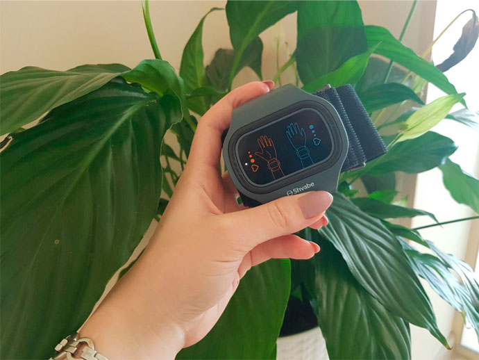

-
 AnnetPink10 minute pentru a citi
AnnetPink10 minute pentru a citi
Cum să scapi de hipertensiune arterială fără pastile și injecții?
Bună ziua, dragii mei!
Mă numesc Ana, am 52 de ani și sunt hipertensivă cu experiență. Am planificat să trăiesc mult și fericit cu un astfel de diagnostic, până când într-o zi o criză hipertensivă aproape că m-a ucis. Ea m-a făcut să-mi reconsider atitudinea faţă de viaţă și să mă ocup de tratamentul hipertensiunii arteriale. Apropo, de mult timp tensiunea mea arterială nu crește peste 130/80. Să vă spun cum am reușit asta?
DE UNDE A VENIT HIPERTENSIUNEA
Am fost un atlet, în tinerețe am înotat, am condus un stil de viață sănătos și am avut totul sub control. Tensiunea arterială a fost ușor ridicată, dar mi se părea o normă. Nu mi-am cunoscut tatăl, dar mama mi-a spus că era hipertensiv. Se pare că hipertensiunea arterială este singurul "cadou" de la tatăl meu.
La 28 de ani, am început să observ că mă simt rău nu numai de la cafea dublă, ci și de la caz la caz. Când aceste cazuri s-au înmulţit, m-am dus din nou la doctor.

O ÎNJUNGHIERE DIRECT ÎN INIMĂ
A fost o zi foarte stresantă, m-am plimbat prin oraș, am fost nervoasă, am băut cafea și am visat doar să mă culc. Deja acasă, am început să mă doară capul, ochii ca și cum ar fi ieșiți din orbitele. Valuri de greață mi s-au rostogolit în gât, mi s-au înmuiat picioarele.
Aceasta a durat aproximativ 15 minute, care mi se păreau o eternitate. Apoi mi-am stors ultimele puteri ca să ajung la telefon și să chem o urgență. Și apoi am leșinat.

INTERNARE ȘI REVENIRE DIN MORȚI
M-am trezit deja în cameră. Recuperarea lungă, medicamente nesfârșite și proceduri dureroase mi-au ajutat să-mi revin în minţi. Când am fost externată de la spital, mi-am dat seama că am fost în pragul morții. Dacă doctorii n-ar fi ajuns la timp, nu aş mai fi.
După externare, am început să administrez medicamente scumpe, dar ei nu au dat niciun rezultat. Mă simțeam mai rău și mai rău.
M-am dus la diferiți medici, toți ei au prescris aceleași medicamente cu aceleași proceduri. Am fost mereu nervoasă de slăbiciune și m-am simțit mai rău și mai rău. Tensiunea arterială a crescut din nou, medicamentele mele au încetat să mă mai ajute. În disperare, am căutat ajutor pentru medicina alternativă, dar și aici mă aștepta dezamăgire. Plantele și perfuziile au dat un efect temporar, homeopatia nu a dat niciun rezultat. Nu știam ce să fac.
Am devenit nervoasă, am fost chinuită de insomnie și de dureri de cap teribile. M-am gândit tot timpul că internarea acela ar putea deveni fatală pentru mine, și cine știe dacă aș putea supraviețui următoarei crize.

CĂUTAREA UNUI TRATAMENT
Când am fost din nou pe pragul clinicii, la ieșire am întâlnit accidental prietena mea, care a lucrat acolo ca asistentă medicală. Am vorbit, îi m-am plâns de hipertensiune arterială, la ce ea a suflecat mâneca bluzei și mi-a arătat un mic aparat pe încheietura mâinii. Se pare că ea, la fel ca mine, a trăit ani de zile cu o tensiune arterială crescută, dar această brățară i-a ajutat să se simtă mai bine.

Colega mi-a spus că, din momentul când o poartă, ea a încetat să mai sufere dureri de cap, să reacționeze acut la schimbările meteorologice și se simte mult mai activă. Această brățarăeste cea mai recentă dezvoltare în domeniul medicinii, care, prin eficacitatea sa, este mult mai bună decât masajele, plantele și medicina alternativă luate împreună. Aparatul transmite curenți de impulsuri mici și scurte, stimulând astfel circulația sângelui și tonifică vasele de sânge.
Aceasta, la rândul său, permite sângelui să accelereze mișcarea în organism:de-a lungul timpului, hipertensiunea arterială este eliminată, tensiunea arterială se aliniază la nivelul normei astronautului. Creierul este alimentat cu sânge la maxim, mușchiul inimii pompează o cantitate suficientă de sânge, ceea ce înseamnă că riscul de a câștiga un accident vascular cerebral și alte bolii însoțite de hipertensiune este redus la minimum.
Nu am putut să cred că un angajat medical îmi spune despre lucruri care sunt ascunse de majoritatea persoanelor care suferă de hipertensiune arterială!
Sincer, am avut îndoieli cu privire la cuvintele prietenei mele. Dacă totul e ficțiune, și ea e doar un agent comercial?
Am venit acasă și am revizuit toate informațiile despre brățară. Iată ce am reușit să găsesc.
Curenții de impulsuri de diferite dimensiuni afectează rădăcinile nervilor spinali, tonifică astfel vasele pentru o circulație mai bună a sângelui. Când brățara declanșează o serie de curenți de impulsuri, se produce excitarea fibrelor nervoase. Datorită acestui efect, microcirculația se îmbunătățește în organism și crește nutriția celulară, care menține structura și funcționarea pielii.
Datele științifice, susținute de recenziile ale pacienților entuziasmaţi din secția cardiologică, m-au convins să comand un astfel de aparat pentru mine.
După câteva zile de utilizare, m-am trezit veselă, cu o dispoziție excelentă și fără dureri de cap. Nici măcar nu mi-am dat seama ce s-a întâmplat la început, dar când mi-am dat seama că nu mă doare nimic și mă simt minunat, am înțeles:aceasta s-a întâmplat datorită brățării și a terapiei sale cu curenți de impulsuri.

A trecut aproape un an de când am experimentat pentru prima dată efectul brățării asupra mea și în acest timp somnul a devenit mai puternic și mai bun, durerile de cap, amețeli și greață au dispărut complet. Am avut o energie incredibilă și o grămadă de puteri care nu erau, chiar și atunci când eram mai tânără.
Dacă înainte tensiunea mea arterială obișnuită a fost 170/100, atunci cu brățara nu a crescut peste 130/80. Deci, asta continuă până în prezent, așa că pot spune cu certitudine că aparatul mi-a salvat într-adevăr de hipertensiune arterială.
De când am început să folosesc această brățară, nici măcar capul nu m-a durut așa cum era până acum. Nu pot spune cum s-a îmbunătățit viața mea fără hipertensiune arterială!
Am devenit din nou activă, merg mult pe jos, rezist ușor zborurile, citesc foarte mult și, în cele din urmă, mă simt ca o persoană complet sănătoasă!

DE UNDE SĂ LUAȚI BRĂȚARA
Mă bucur că mulți încearcă să evite greșelile pe care le-am făcut și încep să aibă grijă de sănătate înainte de primele clopote de alarmă. Pentru toți cei care suferă de tensiune arterială crescută sau de alte probleme vasculare, eu las un link către site-ul unde am comandat dispozitivul. Aveți grijă de dvs., dragii mei.


Weekly Newsletter
Abonați-vă pentru știri independente
de la cei mai buni bloggeri de LiveJournal